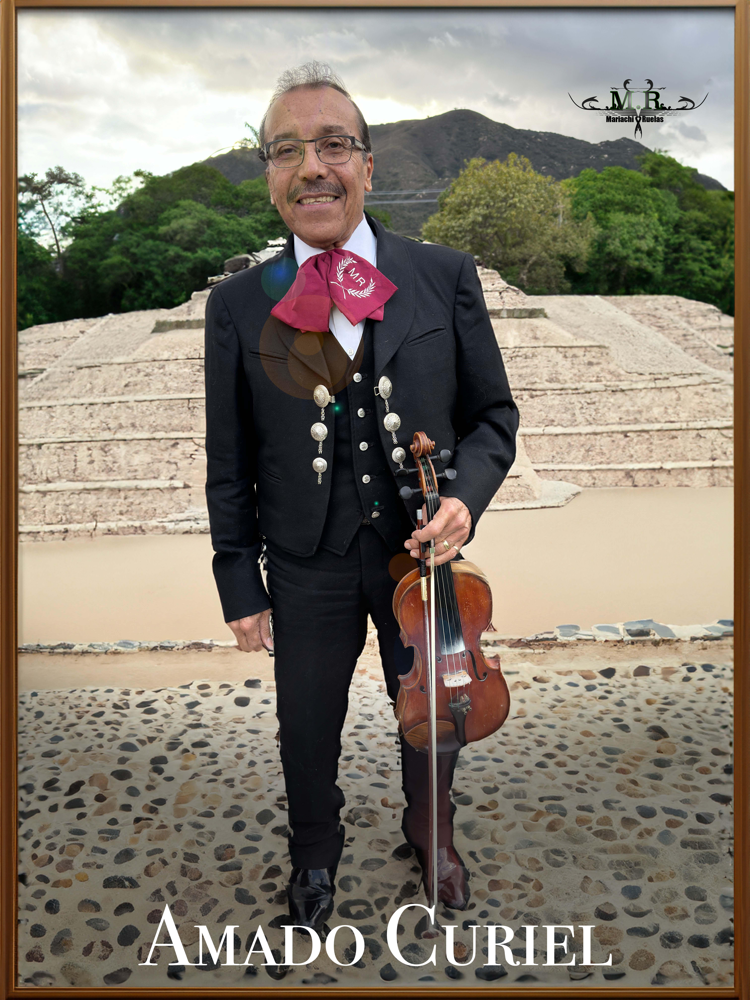
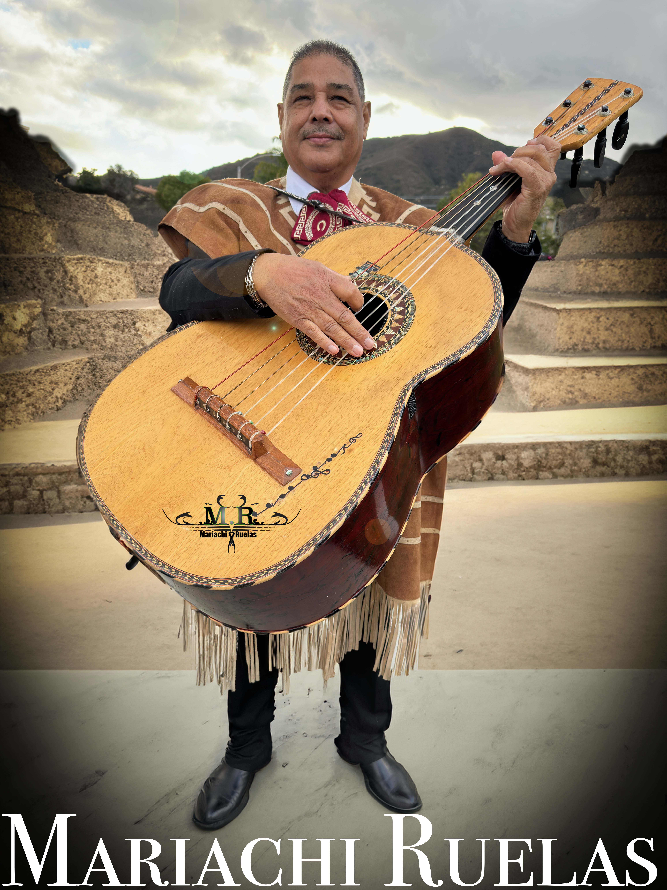

Edgar (Vihuela) has been playing since he was 7 years old. He hails from Jalisco, Mexico—a region with a rich mariachi tradition. Edgar enjoys singing songs from various artists, especially when interpreting the great Vicente Fernández.
Edgar (Vihuela) ha estado tocando desde los 7 años. Es originario de Jalisco, México—una región con una rica tradición de mariachis. A Edgar le gusta cantar canciones de varios artistas, especialmente cuando interpreta al gran Vicente Fernández.

Amado Curiel (Violin) has a vast repertoire of songs, which he skillfully performs with decades of experience under his belt.
Amado Curiel (Violín) tiene un amplio repertorio de canciones, que interpreta con gran destreza gracias a décadas de experiencia.

Catarino (Trumpet) enjoys playing lead trumpet and also contributes vocals to the ensemble.
Catarino (Trompeta) disfruta tocar la trompeta principal y también aporta con su voz al grupo.

Miguel (Guitarrón) has played the guitarrón (bass guitar) throughout his entire musical career. He enjoys interpreting songs by his favorite artist, José Alfredo Jiménez.
Miguel (Guitarrón) ha tocado el guitarrón durante toda su carrera musical. Disfruta interpretar canciones de su artista favorito, José Alfredo Jiménez.